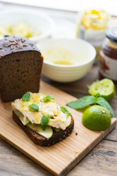
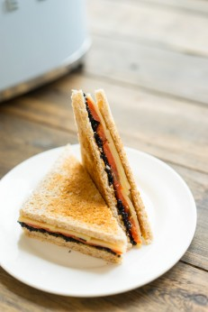

ЗАКУСКИ
Прекрасный хлеб — быстро и без лишних усилий
Подробнее
Прекрасный хлеб — быстро и без лишних усилий Основы Хозяйке на заметку Недавние обзоры
Шикарные профитроли с красной рыбой и творожным сыром
Подробнее
Шикарные профитроли с красной рыбой и творожным сыром Другая праздничная закуска Острый поп-корн из курицы Брусткетты с кальмаром и чили Глазированная свинина Гребешок с соусами Фах...
Завтрак в стиле французских тостов
Подробнее
Завтрак в стиле французских тостов Другие идеи завтраков с хлебом Омлет и ветчина в сэндвичах Каприйская история Морские деликатесы Поддельный торт на скорую руку Клаб-сэндвич Хорош...
Бургер, способный довести до безумия
Подробнее
Бургер, способный довести до безумия Вам пригодится Что такое сферический гриль? Лучшие булочки для бургеров на планете своими руками Другие бургеры Американский бургер с курицей и ...
Глазированная свинина с кукурузным салатом
Подробнее
Глазированная свинина с кукурузным салатом Многие просят мясо, особено в связи с тем, что наступает пора загородных выходных, открытого огня и прочих развлечений летнего сезона. Я д...
Кальмары с восточным акцентом
Подробнее
Кальмары с восточным акцентом Когда я был в Токио (читайте раздел Путешествия), исполнилась одна из моих маленьких мечт — я сходил на рыбный рынок Токио (Tsukiji Fish Market)....
Новые простые панкейки
Подробнее
Новые простые панкейки В моём блоге уже миллион панкейков, если на пишете в поиске (он, кстати внизу каждой страницы) слово «Панкейки», у вас будет невозможное количество ...
Рататуй
Подробнее
Рататуй Когда я не очень хорошо разбирался в кулинарии, думал, что рататуй — это название мультфильма. Сейчас я понимаю, что не только. Невозможно сказать, когда, кто и как пр...
Лучшие на планете булочки для гамбургеров и чая
Подробнее
Лучшие на планете булочки для гамбургеров и чая Если вы такие же фанаты гамбургеров, как и я, то, наверняка, задумывались над тем, что не только котлета и соусы важны, но и сама бул...

Американский бургер с курицей и беконом, домашний соус барбекю
Подробнее
Сегодня у меня в блоге начинается Американская неделя рецептов. Всё очень просто — я выбрал пять классических блюд, возникающих чаще всего в голове при слове АМЕРИКА. Каждый д...
Острый поп-корн из курицы
Подробнее
Острый поп-корн из курицы Признайтесь, иногда бывает так, что сил нет бороться с манящими блюдами империи фаст-фуда. У меня такое часто происходит в Азии, где хочется «закусить...
Кальцоне
Подробнее
Приготовьте тесто по рецепту из раздела Хозяйке на заметку. Дайте постоять в тепле час, пока шар не удвоится в объеме. С начинкой всё просто, берите вообще что угодно по вкусу. Я ре...
Брускетты с кальмарами и острым чили
Подробнее
Брускетты с кальмарами и острым чили Неожиданно подумал, что давно не было лёгких и простых закусок. Один из моих любимейших выдов закусок — это брускетты, итальянские антипас...
Гамбургер с курицей и сочной начинкой
Подробнее
Гамбургер с курицей и сочной начинкой Начинается лето, а значит еда должна становиться легче и красочнее. Самое время приготовить бургеры с хрустящими сочными овощами, которые мы бы...

Идея завтрака: бородинский тост со скумбрией и яблоками
Подробнее
Идея завтрака: бородинский тост со скумбрией и яблоками Завтрак — это не только американские белые тосты. Если пофантазировать, то можно придумать завтрак «а ля рус»...
Идея завтрака: сэндвич с ветчиной и яйцами
Подробнее
Идея завтрака: сэндвич с ветчиной и омлетом Есть на завтрак яйца и ветчину — классический и любимый вариант. Но его можно освежить зеленью и необычной подачей, теперь всё это ...

Идея завтрака: тост в стиле капрезе
Подробнее
Идея завтрака: тост в стиле капрезе Ни для кого не секрет, что хорошую моцареллу для капрезе найти стало довольно сложно. Тогда я подумал, а как даже со средненькой сделать вкусно?!...

Идея завтрака: сэндвич с икрой и рыбой
Подробнее
Идея завтрака: сэндвич с икрой и рыбой Есть хорошее сочетание копчёной рыбы, икры и ароматного сыра. Почему не воспользоваться этой идеей? Можно собрать вкусный завтрак, который пон...
Идея завтрака: сэндвичи с огурцами и ароматизированным маслом
Подробнее
Идея завтрака: сэндвичи с огурцами и ароматизированным маслом Если ищете возможность быстрого и лёгкого завтрака, можно сделать вкусные сэндвичи со свежими огурцами. С одной стороны...
Идея завтрака: клубный сендвич
Подробнее
Идея завтрака: клубный сендвич Помните одно время в большинстве кафе, баров и ночных заведений самым модным блюдом был «Клубный сендвич»? По одной из версий его придумали ...